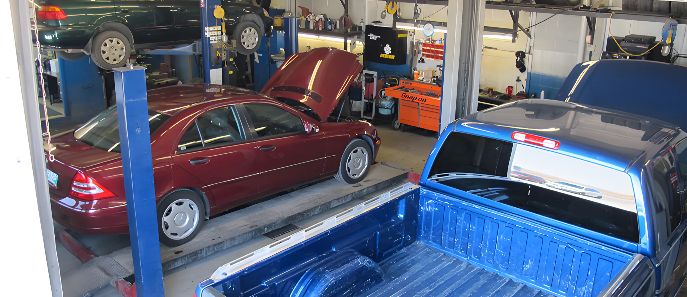
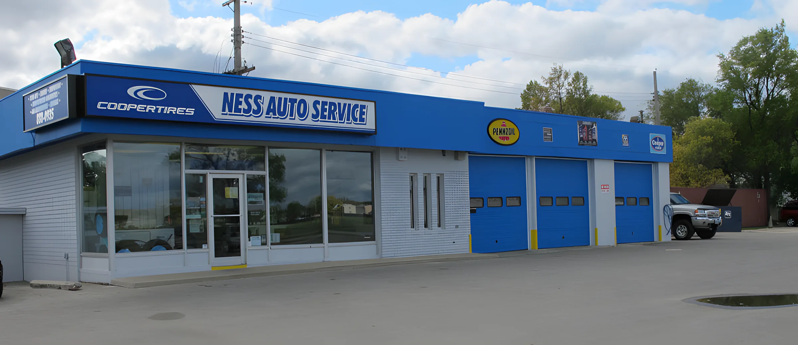
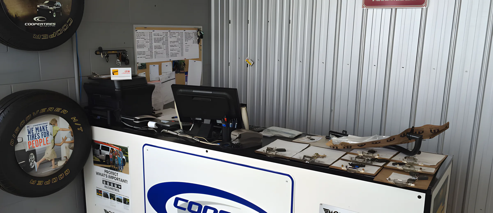
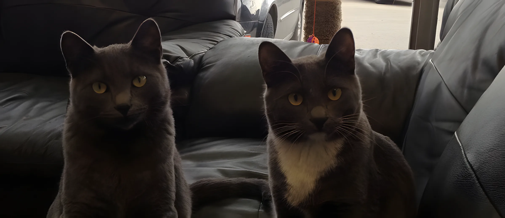

Certified Safety Station
For light passenger vehicles and medium trucks.
A small, family-owned business that has been looking after cars in St. James since 2006.
Brian McKenzie started in this business at 16, working with his father in their automotive repair shops.
From there he went on to manage a seven-bay automotive shop, and then a dealership’s service department here in Winnipeg.
In 2006 he took over the service station at Ness and Mount Royal and opened Ness Auto Service. Some of the customers had been bringing their cars to that corner for decades, and worried it would turn into another coffee shop. It didn’t.
The goal hasn’t changed: keep your car running in tip top shape at the lowest price we can, without compromising on part quality or workmanship. And thanks to everyone who keeps coming back. A returning customer is the best compliment there is.



For light passenger vehicles and medium trucks.
Used vehicles for sale, listed on Kijiji under Ness Auto Service. Financing on approved credit; warranties available.
Tires through MPI’s tire financing program. See Brian for details.
“My wife and I would like to put in a good word for Brian and his automotive repair business, Ness Auto Service, located at Ness and Mount Royal in St. James. We had been having our vehicles serviced and repaired at this location for close to the past 25 years and, when it went up for sale several years ago, we were worried that this location might become just another coffee shop. Then along came Brian.”
“He is an exceptional mechanic who takes pride in what he does. Above all – he is honest. He won’t try to sell you something you don’t need. … It is a place where you get to talk to the guy who worked on your car – not a smiling shirt and tie person with clean hands who doesn’t know you and has never seen your car.”
“On March 18, 2014 I was ‘out and about’ when I noticed a problem with my power steering. … When I got there, Brian was not there, but a nice man named Jeff was. … Jeff came out and looked at my car, and noticed I had a tiny hole in the power steering hose. … This was at 4 o’clock in the afternoon. Jeff said the problem wasn’t too bad, and if I could wait, he could get it fixed right away. True to his word, the hose was fixed, and I was on my way by 5 pm.”
“There are probably not too many places where a person can get exceptional service, even when the owner is not there. Thanks goes out to Jeff!”
“Brian and his team had my Rav up and running the next day. He took the time to explain to me what was wrong … and charged me a very fair price.”
“He drove from his shop to meet me to assess the situation. … He figured out that a mouse had got into my air filter and chewed it to bits. … In this day and age not a lot of … people for that matter would take the time to get someone up and running and not think twice about it.”

2102 Ness Avenue, Monday to Friday, 8am to 6pm.Call 204-888-0935 · Directions